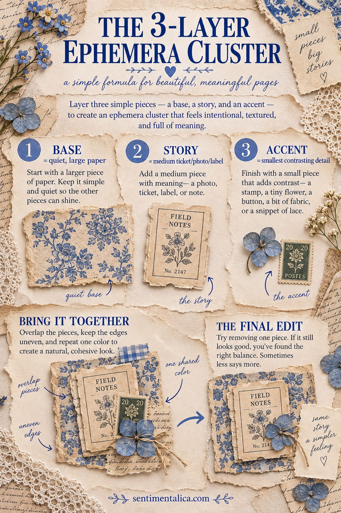

An ephemera cluster is a small group of paper pieces that reads as one visual unit. When it works, it guides the eye and gives a page a clear mood. When it does not, it can feel like a pile of unrelated scraps.
You do not need perfect matching supplies. You need three jobs: a base that creates shape, a story piece that earns attention and an accent that finishes the thought.
Layer one: the base
Choose the quietest and usually largest piece first. Good bases include torn book paper, a fabric scrap, a small doily, a ledger fragment or a rectangle of muted patterned paper.
The base should establish the silhouette without demanding to be read. Let one edge be irregular. A torn or deckled edge helps a small cluster feel integrated with a handmade page.
If the background is busy, choose a calm base. If the background is plain, the base may carry a little pattern.
Layer two: the story
Place one meaningful piece over the base: a photograph, botanical image, ticket, label, postage stamp or handwritten fragment. This is the reason the cluster exists.
Make the story piece noticeably different from the base in at least one way. It might be darker, sharper, more colorful or more detailed. Avoid placing it exactly in the center. A slight offset leaves parts of the base visible and creates movement.
Ask yourself what the piece suggests. A train ticket might suggest departure; a flower might suggest a season; a number might hold a private meaning. You do not have to explain it to anyone, but a small intention makes the cluster feel less random.
Layer three: the accent
Finish with one tiny element: three stitches, a short thread tail, a mini label, a pressed leaf, a small seal or a narrow strip of contrasting paper.
The accent should be the smallest layer. Its job is to echo a color, point toward the focal piece or add tactile interest. If it competes with the story, it is too large or too bright.

Build the cluster before gluing
Arrange the pieces on a scrap of backing paper, not directly on the journal page. Overlap each layer enough that the group holds together visually. As a starting point, cover about one-third of the base with the story piece, then let the accent touch both.
Photograph the arrangement with your phone. The small screen makes imbalance surprisingly easy to see. Then glue the cluster together as one unit and position it on the page.
The final edit
Before attaching the cluster, remove one thing. This is especially useful if you started with five or six tempting scraps. Keep the three pieces that perform distinct jobs; return duplicates to your box.
Also check the empty space around the cluster. It needs breathing room on at least two sides. If it floats awkwardly, align one edge with a page seam, text block or photograph rather than adding more decoration.
You can repeat the formula across a spread without making identical clusters. Change the shapes but keep one common color, material or motif. The result feels connected, while every group still tells its own small story.